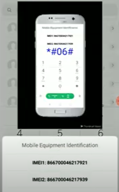
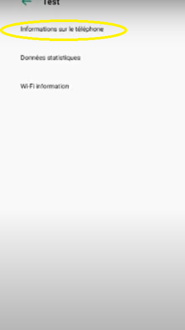

ici vous trouverai plein d'astuces et de code ou des options qui rendras votre téléphonne meilleures:
ici vous allez trouver beaucoup de combinaison de codes que il faut les écrire sur le téléphonne (ou vous faite les appels téléphonniques) ces codes vous aiderons à plus connaitre votre téléphonne ou meme l'améliorer si vous voulez:
la combinaison qui vous aidera a accélérer la charge de son téléphonne est:*#9900# puis cette page va apparaitre

cliquez sur l'option low battery dump au début elle sera off mais après avoir cliquez ça va l'activer.
IMEI est l’acronyme de International Mobile Equipment Identity.Chaque terminal de téléphonie mobile a son propre numéro IMEI, constitué d’une série de 15 à 17 chiffres. En clair, ce numéro est la carte d’identité du téléphone.
il faut simplement tapez le code *#06# puis cette page va apparaitre
 et maintenant vous povez voir votre code IMEIoui vous avez bien lu vous pouvez avoir une connexion sans wifi ni données mobiles ça vous parez dingue non mais c'est la réalité et tous ça grace au code *#*#4636#*#*
voici l'interface
cliquez sur information sur le téléphonne pour ce qui utilise 2 carte sim faite attention sur vous utilisez la première alors cliquez sur "information sur le téléphonne 1" et si vous utilisez la deuxième cliquez sur "information sur le téléphonne 2" ne vous inquétez pas ça ne va rien changer
et maintenant rechercher LTE ONLY

puis activer cette options et atttention avant de cliquez sur cette option assurez vous que le mode avion est activé

ejt mainetenant vous ppouvez naviguer sur internet en libértez mais attention vous ne pouvez pas tout faire vous aurez seulement quelques possibilité ça serai trop beau pour etre vrai:(
ici on vas présenter beaucoup d'application qui vous seront utile pour votre téléhonne alors allons y
maintenant on vas vous présenter comment afficher l'écran de son smartphonne sur pc alors on va utilisez app power
première étape est de l'installer sur pc voici le lien
télécharger app power sur pcensuite sur téléhonne voici le lien pour android
télécharger app power pour androidet pour apple
télécharger app power pour apple